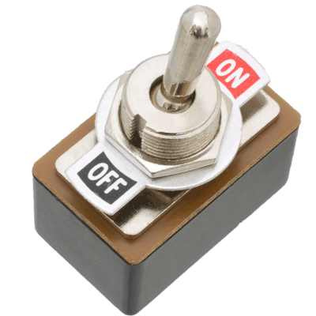

Feature toggles com django-waffle
Feature toggles: ativando e desativando comportamentos em um sistema sem alterar o código, usando django-waffle.

Feature Toggles (often also refered to as Feature Flags) are a powerful technique, allowing teams to modify system behavior without changing code. They fall into various usage categories, and it's important to take that categorization into account when implementing and managing toggles. Toggles introduce complexity. We can keep that complexity in check by using smart toggle implementation practices and appropriate tools to manage our toggle configuration, but we should also aim to constrain the number of toggles in our system. (Martin Fowler)
Pra que complicar?
Sucintamente falando, feature toggles são uma forma de ter código novo, comportamentos novos, em um sistema, sem que eles sejam executados. Mais que isso, que sejam ou não executados, conforme precisemos, mas sem ter que alterar o código novamente. O mais importante: sem ter que colocar em produção ou tirar da produção, só por conta de ter comentando ou descomentando aquele if maroto.
Como exemplo, a minha motivação para usar essa técnica foi uma situação recorrente na CARGOBR, em que planejamos uma melhoria no sistema, que altera muitas coisas para ser completada. Como fazemos deploys diários, não podemos simplesmente ir incorporando em nossa branch de produção código que altera comportamentos parciais.
Uma solução para isso é manter uma branch para essa alteração, e depois que for homologada, fazer o merge. O problema disso é que, inevitavelmente perderemos muito tempo lidando com resolução de conflitos, correndo o risco de ter um código final que não condiz com o que planejamos.
As migrations também podem ser um problema, mas estamos no caminho de apenar fazer migrações não destrutivas, que nos poupem de grandes problemas para serem revertidas. Uma solução é adicionar campos o quanto antes em produção, e nunca excluir, ou então excluir muito tempo depois da alteração estar consolidada (muito tempo depois, em minha visão, são muitos meses).
Toda essa complexidade é a garantia de que não passaremos apuros na implementação de novos recursos, e que cada deploy será muito mais seguro.
Outro benefício é que o código já estará integrado, e com testes rodando, para as situações de ligado e desligado, o que facilita resolver efeitos colaterais de qualquer outra alteração feita durante esse tempo.
Como implementar?
Fácil! Tenha uma base de dados (algum SQL, Redis persistente, MongoDB). Nela, tenha uma tabela para um nome da feature, e uma campo para saber se está ativa ou não. No seu código, quando quiser saber se deve ou não executar determinado código, consulte essa base e siga a vida. Mas fica melhor se puser um cache nisso...
Apesar de eu ser sempre tentado a construir ferramentas, não foi dessa vez, decidimos, em minha equipe, usar um módulo que existe para o Django, o Django-Waffle.
Ele é uma aplicação Django que deve ser instalada em sua aplicação (adicionar no INSTALLED_APPS e rodar as migrações). Para instalar, basta adicionar o pacote 'django-waffle' às suas dependências. Uma dica importante: ao usar sistemas com Django até 1.11, instale a versão 0.14.0 (django-waffle==0.14.0), pois depois dessa versão o suporte é só para Django maior que 1.11.
Critérios!
O django-waffle oferece três tipos de critérios.
A mais simples é o switch, que simplesmente declara (e verifica) se algo está ativo ou não. Em seu código pode ter algo assim:
import waffle
...
def feature():
blo()
blu()
if waffle.switch.is_active('name_of_my_feature'):
bla()
ble()
bli()
def new_feature():
if wafle.switch.is_inactive('name_of_my_new_feature'):
return
nonono()
Caso a feature não esteja no banco de dados, será considerada como desligada, e pode também ser incluída no banco de dados como desligada (tudo isso é configurável).
Para gerenciar as features (criar, ativar, desativar), há os comandos executados a partir da linha de comando, ou mesmo pelo próprio admin.
Outro critério é o sample, que adiciona aleatoriedade. Além do nome da feature, deve-se informar um número. A cada consulta, o waffle comparará o número indicado um número aleatório, e se o aleatório for maior, a feature será considerada inativa.
Por fim, o mais complexo: flag. Além do nome, recebe um contexto de requisição (request). Com esses dados, podemos escolher, por exemplo, grupos de usuários, idioma, percentagem de usuários ou mesmo parâmetros a partir da query string da URL.